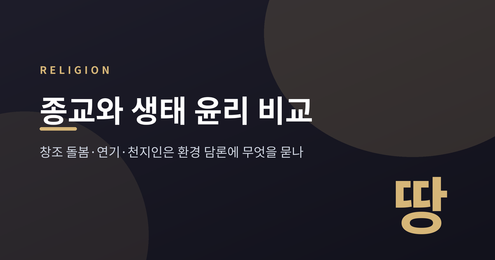
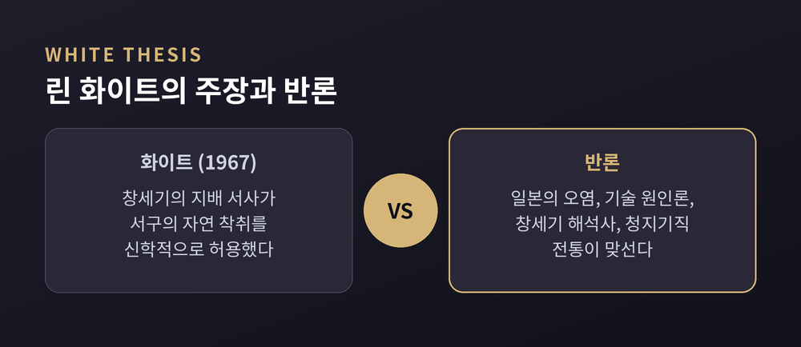
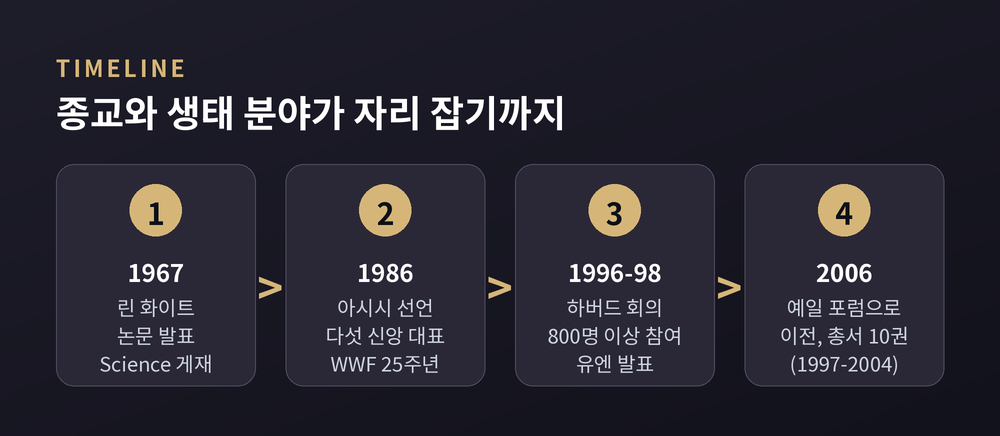
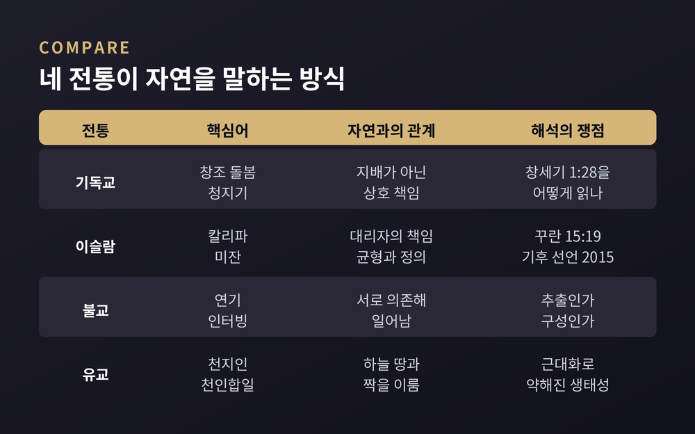
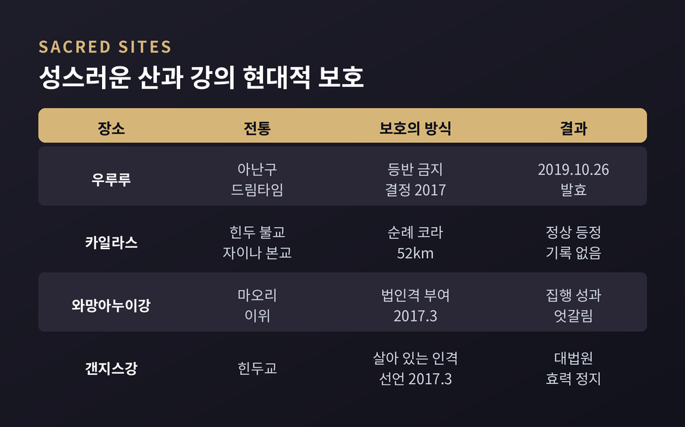

린 화이트의 1967년 논문에서 이슬람의 미잔, 불교의 연기, 동학의 삼경, 와망아누이강의 법인격까지 비교종교학으로 읽습니다
세 줄 요약

이번 글에서는 세계 종교가 자연을 어떻게 바라보았는지, 그리고 그 시각이 오늘의 환경 담론에 어떤 질문을 던지는지 정리해 보겠습니다. 특정 신앙의 우열을 가리는 글이 아니라, 종교학이 '종교와 생태 윤리'를 어떻게 논의해 왔는가에 관한 소개입니다. 한 종교 안에도 여러 해석이 공존하므로, 대표적인 입장을 골라 병기하겠습니다.
중세사학자 린 화이트 주니어는 1967년 3월 10일 《Science》에 「The Historical Roots of Our Ecologic Crisis」를 실었습니다. 그는 기독교가 "세계가 본 가장 인간 중심적인 종교"라고 썼습니다. 창세기의 인간 지배 서사가 자연을 인간을 위한 재료로 보게 했고, 그 관념이 중세 후기 서구의 기술과 과학에 스며들었다는 주장입니다.
화이트는 이런 문장도 남겼습니다. 사람들이 생태에 대해 무엇을 하느냐는 자신을 주변 사물과의 관계 속에서 어떻게 생각하느냐에 달려 있다는 것입니다. 해법으로는 아시시의 프란치스코를 내세웠습니다. 모든 피조물이 신 앞에서 평등하다고 본 이 인물을 생태학자들의 수호성인으로 삼자는 제안이었습니다.
반론은 여러 방향에서 나왔습니다.
2017년에는 논문 50주년을 맞아 『Religion and Ecological Crisis: The "Lynn White Thesis" at Fifty』가 나왔습니다. 이 책은 화이트를 단순히 옹호하지도, 기각하지도 않습니다. 아시아 전통과 젠더, 동물 보호까지 범위를 넓혀 논쟁을 이어 갔습니다. 결국 화이트의 논문은 '증명된 이론'이라기보다 연구 분야 전체를 낳은 질문에 가깝습니다.

화이트 이후 종교계도 응답했습니다. 1986년 9월 아시시에서는 WWF 창립 25주년을 맞아 필립공의 주도로 다섯 신앙의 대표가 자연에 관한 선언을 내놓았습니다. 이 흐름은 1995년 종교·보전 연합(ARC)의 설립으로 이어졌습니다.
학계에서는 메리 에블린 터커와 존 그림이 1996년부터 1998년까지 하버드 세계종교연구센터에서 연속 회의를 열었습니다. 800명 이상의 학자와 실천가가 모였고, 1998년 10월 유엔에서 결과를 알렸습니다. 이때의 성과는 하버드대 출판부에서 1997년부터 2004년까지 펴낸 10권의 총서가 되었습니다. 포럼은 2006년 예일로 옮겨 오늘에 이릅니다.

세계 종교는 모두 '자연을 아끼라'고 말하는 것처럼 보이지만, 근거를 세우는 방식은 다릅니다.
먼저 기독교입니다. 2015년 5월 24일 반포된 회칙 「찬미받으소서」는 인간이 하느님의 모상으로 창조되어 땅을 다스리라는 명을 받았다는 사실이 다른 피조물에 대한 절대적 지배를 정당화한다는 생각을 강하게 거부한다고 밝혔습니다(67항). 창세기의 '일구고 돌보라'에서 돌본다는 말은 보호하고 보존한다는 뜻이며, 인간과 자연 사이의 상호 책임을 가리킨다고 설명합니다. 같은 문서는 '땅의 부르짖음'과 '가난한 이들의 부르짖음'을 함께 들어야 한다고 말합니다(49항). 환경 문제를 정의의 문제와 묶은 것입니다.
유대교에는 발 타슈히트, 곧 '파괴하지 말라'는 원칙이 있습니다. 신명기 20장 19-20절이 전쟁 중에도 열매 맺는 나무를 베지 말라고 한 데서 비롯되었고, 탈무드는 이를 평소의 낭비로 넓혔습니다. 다만 이 원칙은 '불필요한' 파괴를 막는 데 초점이 있어서, 경제적 이득이 크면 나무를 베는 것도 허용되는 한계가 있습니다.
이슬람에서는 칼리파와 미잔이 핵심어입니다. 칼리파는 신의 대리자이자 청지기로, 지배가 아니라 책임을 뜻합니다. 미잔은 균형입니다. 꾸란 15장 19절은 땅을 펼치고 산을 세워 모든 것을 적정한 균형으로 자라게 했다고 말하며, 이 말은 물리적 균형과 정의라는 두 뜻을 함께 품습니다. 2015년 8월 이스탄불에서 나온 이슬람 기후변화 선언은 이 개념들을 바탕으로 화석연료의 신속한 단계적 폐지를 촉구했습니다.
불교의 열쇠는 연기(緣起)입니다. 모든 것이 서로 의존해 일어난다는 이 가르침을 틱낫한은 '인터빙(interbeing)'이라 불렀습니다. 종이 한 장 속에 햇빛과 나무, 벌목꾼이 이미 들어 있다는 비유가 대표적입니다. 달라이 라마는 "붓다가 오늘 오신다면 녹색일 것"이라 말했고, 17대 카르마파는 2008년 히말라야의 50개 이상 사원을 잇는 환경 네트워크를 만들었습니다. 한편 슈미트하우젠은 초기 불교 문헌에 명시적 환경윤리가 없고 연기는 본래 해탈을 위한 가르침이므로, 환경윤리는 '추출'이 아니라 '구성'해야 한다고 보았습니다. 스위어러는 이 문제에 대한 학계의 입장을 다섯 갈래로 나누어 정리했습니다.

동아시아에서는 천지인(天地人)의 틀이 자주 등장합니다. 북송의 유학자 장재는 「서명(西銘)」에서 "하늘은 내 아버지, 땅은 내 어머니, 우주에 가득 찬 것을 나는 내 몸으로 여긴다"고 썼습니다. 두웨이밍은 이를 바탕으로 유교의 세계관을 인간 중심이 아닌 '인간-우주적(anthropocosmic)' 관점이라 부르고, 천인합일을 유교가 환경 담론에 건넬 핵심 기여로 꼽았습니다. 2013년 노르웨이 트론헤임에서 발표된 유교 생태 성명도 인간을 천지와 함께 삼위를 이루는 동반자로 그렸습니다.
다만 두웨이밍 스스로 단서를 달았습니다. 근대화가 유교를 세속적 인문주의로 줄여 버렸고, 생태적 전회는 아직 지향에 머문다는 것입니다. 문헌 속 이상과 현실의 정책 사이에는 거리가 있습니다.
한국에서는 동학의 해월 최시형이 삼경(三敬), 곧 경천·경인·경물을 가르쳤다고 전해집니다. 하늘을 공경하고, 사람을 하늘처럼 섬기며, 풀 한 포기도 함부로 꺾지 말라는 것입니다. 1891년 전라도 순회 중에는 땅을 어머니의 살같이 소중히 여기라고 말했다고 합니다. 이 인용은 2차 정리에 의존하므로, 원전 확인은 별도로 필요합니다. 그럼에도 사람과 사물을 같은 공경의 줄에 세웠다는 점은 천지인 사유의 한국적 변주로 흥미롭습니다.
글이나 선언만이 아니라 구체적인 장소에서 종교의 자연관이 시험대에 오른 사례가 있습니다.
호주 중부의 우루루는 전통 소유주인 아난구 사람들에게 신성한 드림타임의 길이 지나는 곳입니다. 1985년 10월 26일 소유권이 반환되었고, 공원 이사회는 2017년 11월 1일 만장일치로 등반 금지를 결정했습니다. 금지는 2019년 10월 26일 발효되었습니다.
티베트의 카일라스산(6,638m)은 힌두교, 불교, 자이나교, 본교가 모두 성지로 여깁니다. 순례자는 52km를 도는 코라를 걷는데, 앞의 세 전통은 시계 방향으로, 본교는 반시계 방향으로 돕니다. 정상에 오른 기록은 없습니다.
뉴질랜드의 와망아누이강은 마오리 이위의 말로 "내가 강이고 강이 곧 나"입니다. 이위는 1873년부터 140년에 걸쳐 법적 보호를 요구했고, 2017년 3월 「Te Awa Tupua 법」이 강에 법인격을 부여했습니다. 이위와 왕실이 한 명씩 지명하는 후견인이 강의 목소리가 됩니다. 그러나 이후 수질 분쟁에서의 성과는 엇갈린다는 평가도 있습니다.
인도의 갠지스와 야무나는 2017년 3월 20일 우타라칸드 고등법원에서 '살아 있는 법적 인격'으로 선언되었습니다. 하지만 같은 해 7월 7일 대법원이 이 결정의 효력을 정지시켰습니다. 강이 여러 주를 흐르는 만큼 권한 문제가 얽혀 있었고, 책임 소재를 가리는 집행도 난제였습니다. 리시케시와 하리드와르 같은 도시에서만 하루 최소 3억 9천만 리터의 하수가 흘러든다는 보고도 있습니다. 여신으로 숭배받는 강이 가장 심하게 오염되는 강이기도 하다는 역설입니다.

종교학의 시각에서 이 비교는 몇 가지 질문을 남깁니다.
첫째, 교리 속 자연관은 실제 행동을 얼마나 바꾸는가. 화이트는 사람들이 자신을 어떻게 이해하느냐가 행동을 좌우한다고 보았지만, 일본의 오염과 갠지스의 현실은 믿음과 실천 사이의 간극을 보여 줍니다.
둘째, 전통에서 환경윤리를 '발견'하는가, '구성'하는가. 슈미트하우젠의 지적처럼 오늘의 생태 담론은 과거 문헌에 없던 문제를 다루므로, 해석에는 창의적 재구성이 따릅니다. 이를 왜곡으로 볼지 전통의 살아 있는 발전으로 볼지는 입장이 갈립니다.
셋째, 성스러움은 법과 정책의 언어로 번역될 수 있는가. 와망아누이는 가능성을, 갠지스는 한계를 보여 줍니다. 한편 브론 테일러는 자연에 내재 가치를 두는 새로운 흐름을 '짙은 녹색 종교'라 불렀지만, 이 개념이 종교학의 정의에 맞는지를 두고 비판도 있습니다.
정리하면 이렇습니다. 어느 전통도 자연을 아끼라는 말을 하지만, 그 근거는 창조 돌봄, 균형, 연기, 천지인으로 각기 다릅니다. 같은 구절이 지배의 허락으로도, 돌봄의 책임으로도 읽혔다는 사실이 이 분야의 핵심입니다.
"자연을 어떻게 읽느냐가 자연에 무엇을 하느냐를 바꾼다." 화이트가 던진 이 문장은 반세기 넘게 반박되면서도 여전히 되풀이됩니다.
오늘 우리가 숲이나 강 앞에서 멈춘다면, 그것은 어떤 이야기를 따르는 것이냐고 물으신다면, 이 글은 그 질문을 남기는 것으로 충분하다고 답하겠습니다.